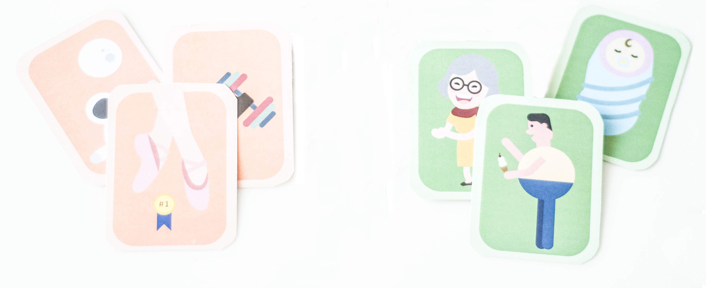
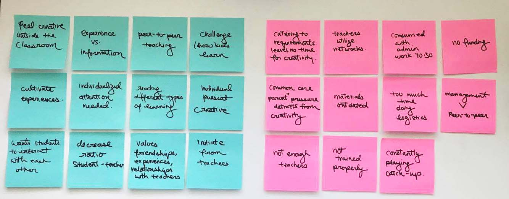
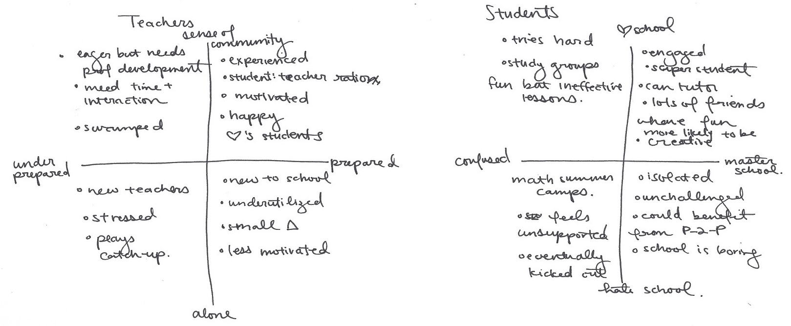
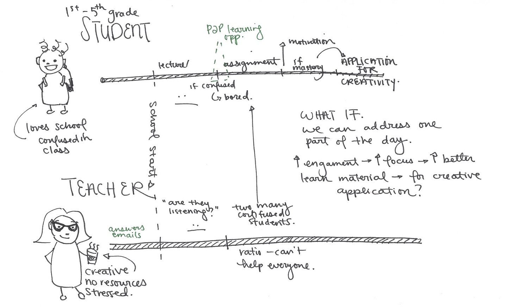

Snickerdoodle
A card game enhancing creativity in 2nd and 3rd grade students.
Role
UX research and product design
Timeline
Aug 2016 - Dec 2016
Kudos
Mimmi Linquist, Darren Kunitake, Julie Noh
Snicker
A creativity card game for 2nd and 3rd grade students.
ROLE
UX research and product design
Timeline
Aug 2016 - Dec 2016
Kudos
Mimmi Linquist, Darren Kunitake, Julie Noh
Does the education system make children less creative?
I tutored 2nd and 3rd graders in Oakland last fall. I noticed my students were constantly taught convergent thinking- questions have one correct answer.
Being trained in only one type of problem-solving may cause students to lose the ability to think creatively and divergently. So my team and I asked, how might we help elementary school students remain creative?
What are classroom dynamics actually like?
To evaluate the problem space, my team conducted in-depth interviews with students, elementary school teachers, parents, school adminstrators, researchers, and professors in the education field, we sought to deeply understand the sentiment, priorities, and needs of the classroom.


Interviewed a TFA teacher, director of teacher training, second grade teacher, 7 elementary school students, a charter school organization, a professor of education at Cal, and a founder of an after school math program director.
In addition to our interviews, I sat in on 2nd, 3rd, and 4th grade classes in various in-class and afterschool settings, noting observations in field notes to better understand the role of creativity in the classroom.
PROCESSING
With the experiences of our stakeholders under our belt, we set out to process the user research into insights with 2-by-2 matrices, customer journey maps, and putting ourselves in both the students' and teachers' shoes.

Our thoughts after our conducting interviews and gathering observations

Organizing and reorganizing the knowns in 2-by-2 matrices to discover the unknown.

In our journey maps, we decided found that there were slumps in energy and focus in the school day for both students and teachers. We could potentially energize a classroom with an activity that allowed them to flex their creativity.
FINDINGS
In synthesizing key quotes, sentiments, and pain points that we spoke to people about, we found two main blockades to creativity in the classroom.
First, because of the large load of administrative work, teachers lack the time to incorporate creative curriculum into their lecture. Secondly, high-energy elementary school students need an environment of structured chaos to practice creativity.
How might we energize students while maintaining their focus during creative exercises?
Translating our insights into a solution, we decided on five points we wanted our product to accomplish.
First, with the goal being to enhance creativity in 2nd graders, our priority was that to foster divergent thinking by facilitating open-ended discussion.
Second, because speaking out about ambiguous answers requires risk-taking, we found that students were more likely to think divergently when they felt that their voices were valued. Therefore, we wanted to make students' knowledge from outside a classroom valuable, by making our activity require students to draw from formal and informally learned knowledge.
Third, we knew that each classroom was different. Each group of students have different needs, and the focus of the teachers could be different. We wanted our activity to adapt to specific classroom needs by offering multiple ways to interact with the exercise.
Fourth, we wanted to help develop empathy in students by asking them to imagine a day in someone else's life.
Lastly, we wanted to ensure that the activity could be easily implemented into the school day by giving teachers easy control of how long the activity would last.
IDEATION
From these design principals, we came up with 15+ activities that hit all of our design principals and landed on something that could most seamlessly and effortlessly be integrated with the teacher’s existing curriculum: Snickerdoodle.
Play time.
Moderators are given three decks.

They draw one card from each deck. The activity card gives options as to what game could be done with Snickerdoodle. This activity can vary depending on what skills the moderator would like the class to work on or how long the moderator would like the game to be.

The following activity is then shaped around bringing the person to life. For example, in the Q&A game teachers could ask the class the following.
When does this person sleep? What do they eat for lunch? Who is this person’s best friend? What does this person do in his/her free time? What is the most important thing to this person? What makes this person happy?
How did it pan out in a classroom?
USER TESTING
OUR ASSUMPTIONS
UX TESTING INSIGHTS
We tested our product in a fourth grade classroom during afterschool hours.
During our user testing, we uncovered more problems and assumptions that we had about the way the game would work and the way classroom interactions work.
OUR ASSUMPTIONS
We thought that elementary school students were generally quiet individuals who didn't have enough opportunities to speak up in class. For the most part, students were bouncing off the walls and speaking over each other.
Our game also worked if students were good listeners who retain what others say and build off of existing conversation. This is not a natural tendency, and students are usually just waiting their turn to speak. They also fixate on things already said and just come up with minor variations of contributed thoughts.
We also assumed that it was the student's natural inclination to want to obey authority- and they need to learn how to challenge authority instead. However, students often test their teachers.
UX TESTING INSIGHTS
In the 4th classroom, order, authority, and focus are a few of the most important things that students learn. This class may have its own personality compared to other classes, but these characteristics made it difficult to play the game UNLESS the class was led by a strong teacher who was able to assert authority and moderate discussion.
The game energized students and they had fun, but we needed to get students focused as well. Though students say interesting things diverging off topic, productive creativity needs structure and focus.
Creativity requires an environment of structured chaos.
NEXT STEPS
To better enhance creativity, we needed to define metrics and find measurable and detailed ways to track student's progress in a systematic way.
In future iterations, I would consider including a way to reward active listening and building discussion off of previous comments. We could also test penalizing any repeated comments.